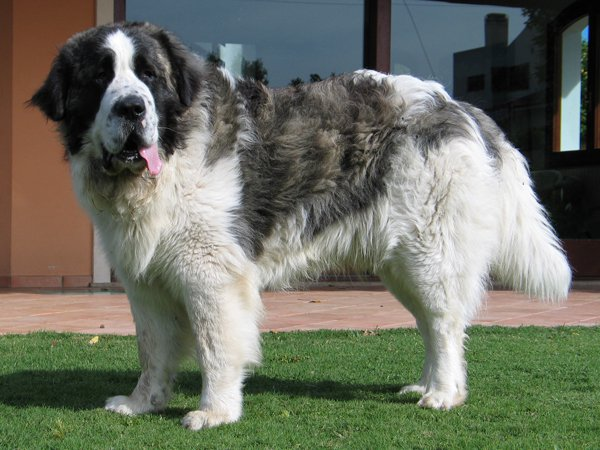
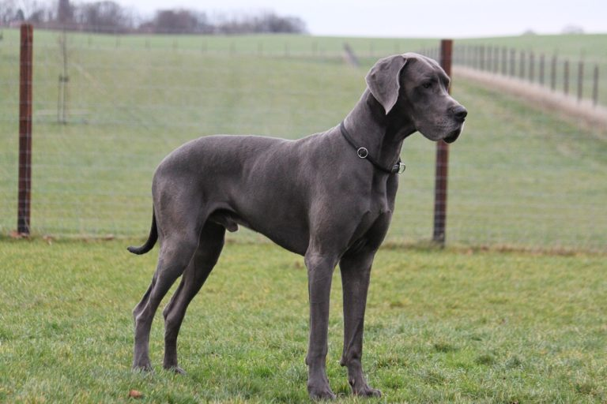
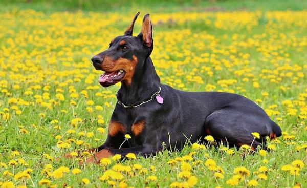
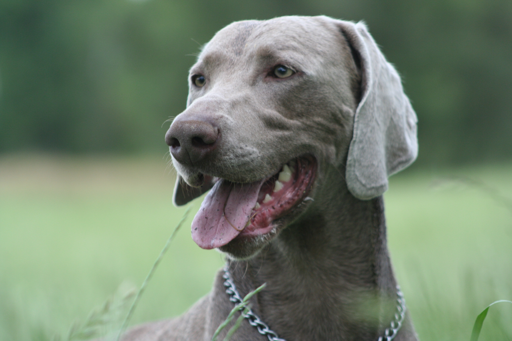
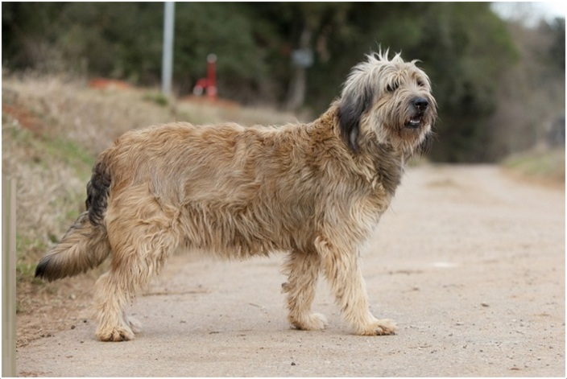

Perros Grandes
San Bernardo

Mastin del Pirineo

Gran Danes

Doberman

Pastor Aleman

Braco de Weimar

Pastor Catalan

Sharpei

Advertencias
- Tendrás una mascota que, cuando alcance su tamaño definitivo, superarará, como mínino, los 20 kilogramos de peso.
- Los gastos serán mayores porque estos peludos comen más, los accesorios son también más caros, el presupuesto del veterinario se incrementará, etc.
- Necesitarás contar con espacio en tu casa para que tengais cierta comodidad.
- Los movimientos del perro seran más torpes y causaran mayores destrozos.